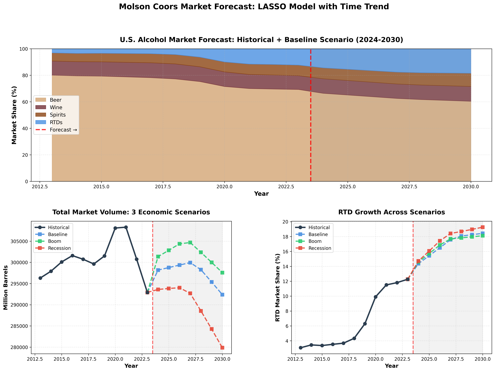

add screenshot → assets/molson-coors.png
01
Forecasting · Economics · ML
Forecasting the U.S. Alcohol Market
The Data Mine × Molson Coors
How do macroeconomic conditions change what America drinks?
Five-year forecasts across Beer, Wine, Spirits, and RTDs. I owned Beer and RTDs — LASSO with macroeconomic drivers, chosen after SARIMAX and XGBoost failed on 35 annual data points.
Key findingRTDs are recession-resistant.